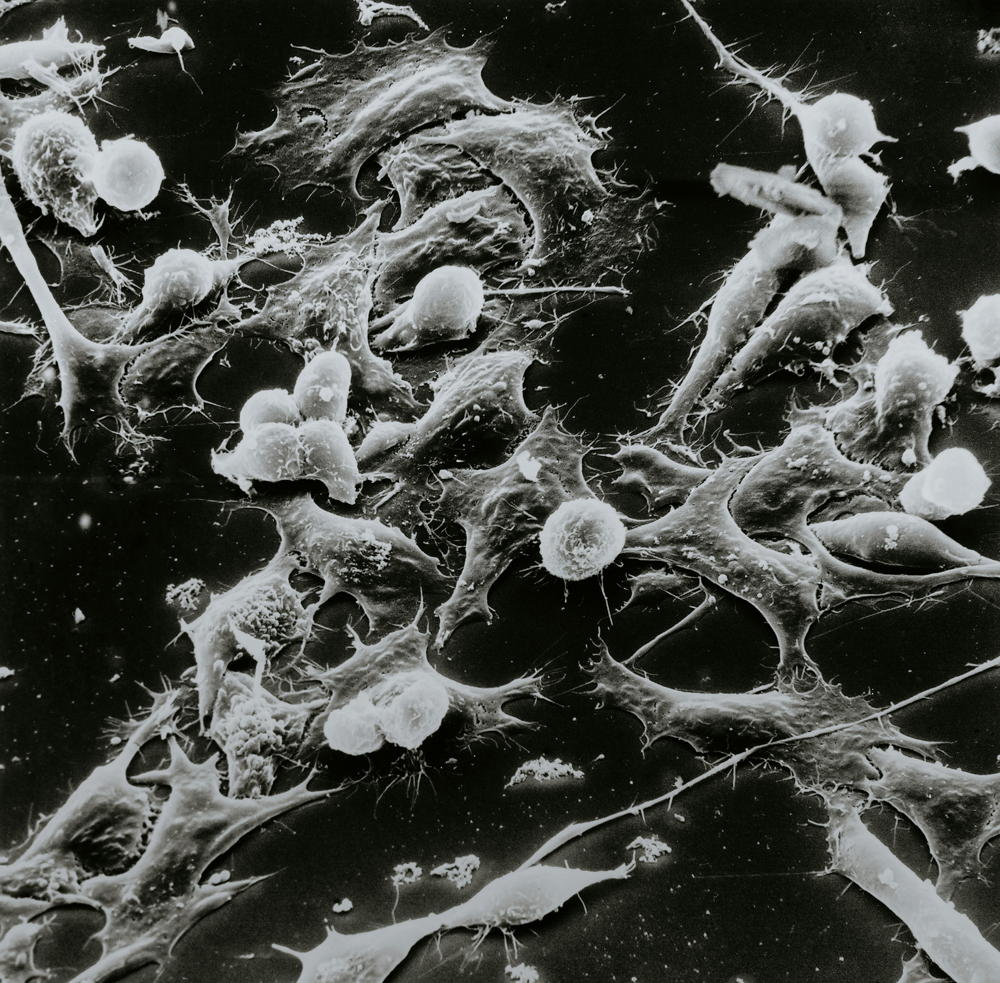
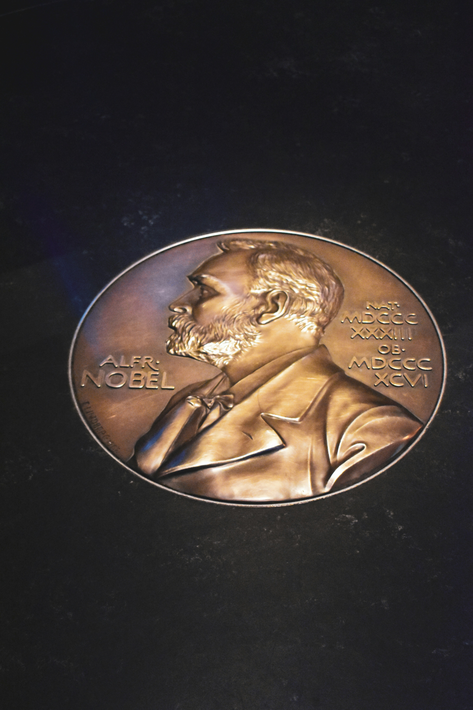

La découverte du traitement contre le cancer par Sadou est le résultat d’années de travail acharné, d’une vision novatrice et d’une collaboration multidisciplinaire dans le domaine de la recherche scientifique. En 2040, après près de deux décennies passées à explorer les mécanismes complexes des cellules cancéreuses, il a dévoilé une avancée révolutionnaire qui a changé à jamais le cours de la médecine. Tout a commencé lorsqu’il a intégré le laboratoire de Cold Spring Harbor, l’un des centres de recherche biomédicale les plus prestigieux au monde. Là-bas, Sadou a travaillé avec une équipe internationale de scientifiques pour décrypter le génome des cellules tumorales et comprendre les anomalies moléculaires qui favorisent leur croissance. À travers l’utilisation de l’intelligence artificielle, il a analysé d’énormes quantités de données génétiques, identifiant des cibles précises pour attaquer les cellules cancéreuses sans endommager les tissus sains. La découverte clé est survenue lorsqu’il a réussi à concevoir une molécule capable de pénétrer sélectivement les cellules cancéreuses et d’interférer avec leurs mécanismes de division, tout en stimulant le système immunitaire pour éliminer les résidus tumoraux. Cette molécule, associée à des nanoparticules capables de transporter le traitement directement vers les tumeurs, a démontré une efficacité sans précédent lors des essais cliniques. En parallèle, Sadou a développé une technique révolutionnaire utilisant la thérapie génique pour prévenir les récidives du cancer en modifiant l’ADN des cellules à risque. Ce traitement, appelé “Protocole VitaNova”, a non seulement éradiqué les tumeurs, mais a également permis aux patients de retrouver une santé optimale sans effets secondaires majeurs. Sa découverte a été saluée dans le monde entier et a conduit à une collaboration entre gouvernements, ONG et entreprises pharmaceutiques pour garantir un accès universel à ce traitement. Sadou n’a pas seulement apporté une solution médicale, il a également inspiré une nouvelle ère de recherche scientifique axée sur la compassion et l’innovation.


En 2041, suite à sa découverte révolutionnaire du traitement contre le cancer, Sadou a reçu le prestigieux prix Nobel de médecine. Cette reconnaissance mondiale a été attribuée pour son travail exceptionnel qui a non seulement transformé la lutte contre cette maladie dévastatrice, mais a également ouvert la voie à de nouvelles approches thérapeutiques dans le domaine de la médecine. Le Comité Nobel a salué sa capacité à combiner des technologies de pointe, telles que l’intelligence artificielle et la biotechnologie, pour créer un traitement à la fois efficace et accessible. Son protocole, qui cible spécifiquement les cellules cancéreuses tout en préservant les tissus sains, a permis de sauver des millions de vies dans le monde entier et d’offrir un espoir aux patients auparavant condamnés. Lors de la cérémonie de remise du prix, Sadou a dédié cette victoire à tous ceux qui ont souffert du cancer, en soulignant que cette découverte n’était qu’une étape dans la quête d’un monde sans maladies incurables. Il a également exprimé son engagement à rendre son traitement accessible à tous, indépendamment de leur statut économique, afin de combattre les inégalités en matière de soins de santé. Le prix Nobel de médecine est venu couronner des années de recherches passionnées et de détermination, établissant Sadou comme l’une des figures les plus influentes et respectées du XXIe siècle dans le domaine de la biomedicine.
En plus de sa découverte du traitement contre le cancer, Sadou a également été un acteur clé dans l’avancée des connaissances sur les capacités cognitives humaines et la neurologie. Tout au long de sa carrière, il a collaboré avec des neuroscientifiques, des psychologues et des experts en intelligence artificielle pour mieux comprendre les mécanismes de la mémoire, de l’apprentissage et de la prise de décision. Il a notamment participé à des recherches pionnières sur les interfaces cerveau-machine, une technologie révolutionnaire permettant de stimuler et de réparer des zones spécifiques du cerveau pour traiter des maladies neurodégénératives, comme Alzheimer et Parkinson. Ses travaux ont ouvert la voie à des traitements permettant de régénérer les cellules nerveuses endommagées, offrant de nouvelles perspectives pour des millions de patients. En parallèle, Sadou a joué un rôle essentiel dans l’étude des capacités cognitives humaines, en particulier en ce qui concerne l’intelligence émotionnelle et la plasticité cérébrale. Il a contribué à la mise au point de thérapies novatrices pour améliorer la concentration, la mémoire et la gestion du stress, aidant ainsi à combattre des troubles comme l’anxiété, la dépression et les troubles de l’attention. Sa passion pour l’innovation l’a également conduit à participer activement à des projets visant à intégrer l’intelligence artificielle et l’apprentissage machine dans la médecine, non seulement pour le diagnostic des maladies, mais aussi pour l’amélioration de la prise en charge des patients, grâce à des outils de prédiction et de personnalisation des traitements. Outre ses travaux scientifiques, Sadou a collaboré avec de nombreuses organisations internationales, des gouvernements et des institutions académiques pour promouvoir l’éthique dans les recherches biomédicales et défendre un accès équitable aux technologies de santé. Il a ainsi participé à l’élaboration de politiques mondiales sur l’utilisation responsable des technologies médicales et de l’IA, assurant que ces avancées bénéficient à l’humanité dans son ensemble. Sa capacité à mener plusieurs recherches simultanément, tout en restant à la pointe de l’innovation dans des domaines aussi divers que la médecine, les neurosciences et la biotechnologie, fait de lui une figure incontournable dans le monde scientifique et médical.